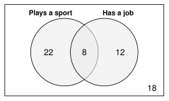
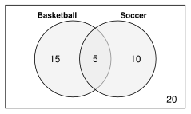

60 students answered two questions: Do you play a sport? Do you have a job? A two-way table shows the answers to both questions at once.
| Job | No job | Total | |
|---|---|---|---|
| Sport | 8 | 22 | 30 |
| No sport | 12 | 18 | 30 |
| Total | 20 | 40 | 60 |

| Each cell counts students who match both labels. | 8 students play a sport and have a job. |
| The totals are in the margins. | 30 students play a sport. 20 have a job. |
| The grand total is the corner. | 60 students in all. |
Check: Each row adds to its total. Each column adds to its total. , .
Venn diagram: the overlap is “both” (8). Outside the circles is “neither” (18).
Relative frequency table. Divide every count by the grand total. This gives the percent of all students.
| Job | No job | Total | |
|---|---|---|---|
| Sport | |||
| No sport | |||
| Total | 100% |
About 13% of all the students play a sport and have a job. The four inside cells add to 100%.
Work with a partner. Compare answers when you finish each problem.
| Bus | Car | Walk | Total | |
|---|---|---|---|---|
| 9th grade | 18 | 12 | 10 | 40 |
| 10th grade | 14 | 20 | 6 | 40 |
| Total | 32 | 32 | 16 | 80 |
| Yes | No | Total | |
|---|---|---|---|
| 11th grade | 15 | 20 | 35 |
| 12th grade | 12 | 10 | 22 |
| Total | 27 | 30 | 57 |
| Likes dogs | No dogs | Total | |
|---|---|---|---|
| Likes cats | 12 | 18 | 30 |
| No cats | 14 | 6 | 20 |
| Total | 26 | 24 | 50 |

Make a two-way table from the Venn diagram.
| Soccer | No soccer | Total | |
|---|---|---|---|
| Basketball | 5 | 15 | 20 |
| No basketball | 10 | 20 | 30 |
| Total | 15 | 35 | 50 |
| Bus | Car | Walk | Total | |
|---|---|---|---|---|
| 9th grade | 22.5% | 15% | 12.5% | 50% |
| 10th grade | 17.5% | 25% | 7.5% | 50% |
| Total | 40% | 40% | 20% | 100% |